#FAMOUS CITIES OF RAJASTHAN:-
1:-JAIPUR:-Jaipur is a popular tourist destination in India and forms a part
of the west Golden Triangle tourist circuit along with Delhi and Agra (240 km, 149 mi). It also serves as a
gateway to other tourist destinations in Rajasthan such as Jodhpur (348 km, 216 mi), Jaisalmer (571 km, 355
mi), Udaipur (421 km, 262 mi), Kota (252 km, 156 mi) and Mount Abu (520 km, 323 mi).
.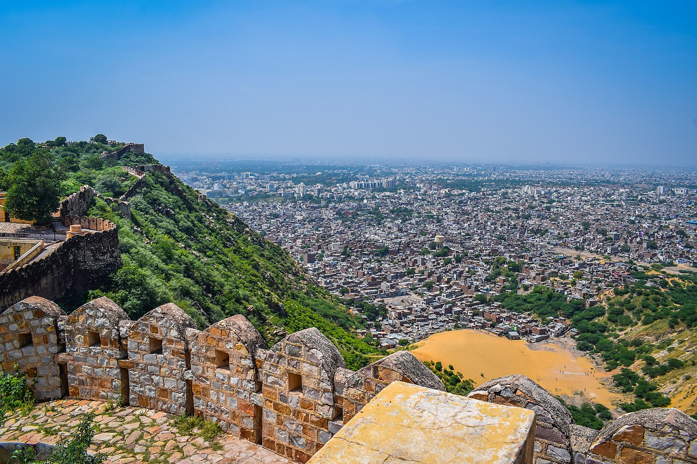
2:-UDAIPUR:-Udaipur , is a city in the state of Rajasthan, India.It is the
historic capital of the kingdom of Mewar in the former Rajputana Agency. It was founded in 1559 by Udai
Singh II of the Sisodia clan of Rajput,when he shifted his capital from the city of Chittorgarh to Udaipur
after Chittorgarh was besieged by Akbar. It remained as the capital city till 1818 when it became a British
princely state.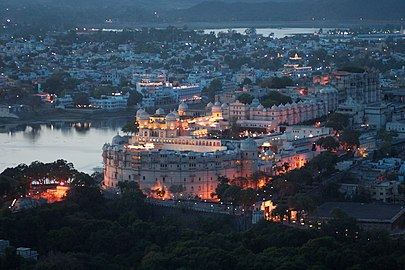
3:-AJMER:-Ajmer is one of the major and oldest cities in the Indian state of
Rajasthan and the centre of the eponymous Ajmer District. It is located at the centre of Rajasthan. It is
also known as heart of Rajasthan.[citation needed] The city was established as "Ajayameru" (translated as
"Invincible Hills") by a Chahamana ruler, either Ajayaraja I or Ajayaraja II, and served as their capital
until the 12th century CE.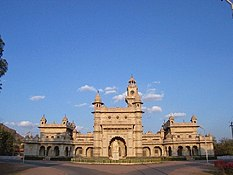
4:-JAISLMARJaisalmer , nicknamed "The Golden city", is a city in the Indian
state of Rajasthan, located 575 kilometres (357 mi) west of the state capital Jaipur. The town stands on a
ridge of yellowish sandstone and is crowned by the ancient Jaisalmer Fort. Many of the houses and temples of
both the fort and of the town below are built of finely sculptured sandstone.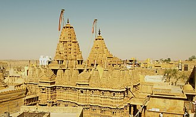
#FAMOUS FORTS OF RAJASTHAN.........
#1:-AMBER FORT(JAIPUR):-
Amer Fort or Amber Fort is a fort located in Amer, Rajasthan, India. Amer is a town with an area of 4 square
kilometres (1.5 sq mi)located 11 kilometres (6.8 mi) from Jaipur, the capital of Rajasthan. The town of Amer
and the Amber Fort were originally built by Raja Man Singh and additions were, later, made by Sawai Jai
Singh. Located high on a hill, it is the principal tourist attraction in Jaipur. Amer Fort is known
for its artistic style elements. With its large ramparts and series of gates and cobbled paths, the fort
overlooks Maota Lake, which is the main source of water for the Amer Palace.
Mughal architecture greatly influenced the architectural style of several buildings of the fort.Constructed
of red sandstone and marble, the attractive, opulent palace is laid out on four levels, each with a
courtyard. It consists of the Diwan-e-Aam, or "Hall of Public Audience", the Diwan-e-Khas, or "Hall of
Private Audience", the Sheesh Mahal (mirror palace), or Jai Mandir, and the Sukh Niwas where a cool climate
is artificially created by winds that blow over a water cascade within the palace. Hence, the Amer Fort is
also popularly known as the Amer Palace. The palace was the residence of the Rajput Maharajas and their
families. At the entrance to the palace near the fort's Ganesh Gate, there is a temple dedicated to Shila
Devi, a goddess of the Chaitanya cult, which was given to Raja Man Singh when he defeated the Raja of
Jessore, Bengal in 1604. (Jessore is now in Bangladesh). Raja Man Singh had 12 queens so he made
12 rooms, one for each Queen. Each room had a staircase connected to the King’s room but the Queens were not
to go upstairs. Raja Jai Singh had only one queen so he built one room equal to three old queen’s rooms.
#2:-CITY PALACE(JAIPUR):-
The City Palace, Jaipur was established at the same time as the city of Jaipur, by Maharaja Sawai Jai Singh
II, who moved his court to Jaipur from Amber, in 1727. Jaipur is the present-day capital of the state of
Rajasthan, and until 1949 the City Palace was the ceremonial and administrative seat of the Maharaja of
Jaipur. The Palace was also the location of religious and cultural events, as well as a patron of arts,
commerce, and industry. It now houses the Maharaja Sawai Man Singh II Museum, and continues to be the home
of the Jaipur royal family.[citation needed] The palace complex has several buildings, various courtyards,
galleries, restaurants, and offices of the Museum Trust.The MSMS II Museum Trust is headed by chairperson
Rajamata Padmini Devi of Jaipur (from Sirmour in Himachal Pradesh). Princess Diya Kumari runs the Museum
Trust, as its secretary and trustee. She also manages The Palace School and Maharaja Sawai Bhawani Singh
School in Jaipur. She founded and runs the Princess Diya Kumari Foundation to empower underprivileged and
underemployed women of Rajasthan. She is also an entrepreneur. In 2013, she was elected as Member of the
Legislative Assembly of Rajasthan from the constituency of Sawai Madhopur.
#3:-HAWA MAHAL(JAIPUR):-
The Hawa Mahal is a palace in the city of Jaipur, India. Built from red and pink sandstone, the palace sits
on the edge of the City Palace, Jaipur, and extends to the Zenana, or women's chambers.
The structure was built in 1799 by the Maharaja Sawai Pratap Singh, the grandson of Maharaja Sawai Jai
Singh, who was the founder of the city of Jaipur, India. He was so inspired by the unique structure the
of Khetri Mahal that he built this grand and historical palace.
It was designed by Lal Chand Ustad. Its five-floor exterior is akin to a honeycomb with its 953 small
windows called Jharokhas decorated with intricate latticework. The original intent of the lattice design
was to allow royal ladies to observe everyday life and festivals celebrated in the street below without
being seen, since they had to obey the strict rules of "purdah", which forbade them to appear in public
without face coverings. This architectural feature also allowed cool air from the Venturi effect to pass
through, thus making the whole area more pleasant during the high temperatures in summer.Many
people see the Hawa Mahal from the street view and think it is the front of the palace, but it is the
back.
In 2006, renovation works on the Mahal were undertaken, after a gap of 50 years, to give a facelift to the
monument at an estimated cost of Rs 4.568 million. The corporate sector lent a hand to preserve the
historical monuments of Jaipur and the Unit Trust of India has adopted Hawa Mahal to maintain it. The
palace is an extended part of a huge complex. The stone-carved screens, small casements, and arched roofs
are some of the features of this popular tourist spot. The monument also has delicately modelled hanging
cornices.
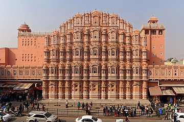
#4:-NAHARGARH FORT(JAIPUR):-
Nahargarh Fort stands on the edge of the Aravalli Hills, overlooking the city of Jaipur in the Indian state
of Rajasthan. Along with Amer Fort and Jaigarh Fort, Nahargarh once formed a strong defence ring for the
city. The fort was originally named Sudershangarh, but it became known as Nahargarh, which means 'abode of
tigers'. The popular belief is that Nahar here stands for Nahar Singh Bhomia,whose spirit haunted the
place and obstructed construction of the fort. Nahar's spirit was pacified by building a temple in his
memory within the fort, which thus became known by his name.Built mainly in 1734 by Maharaja Sawai Jai
Singh, the king of Jaipur, the fort was constructed as a place of retreat on the summit of the ridge above
the city. Walls extended over the surrounding hills, forming fortifications that connected this fort to
Jaigarh, the fort above the old capital of Amber. Though the fort never came under attack during the course
of its history, it did see some historical events, notably, the treaties with the Maratha forces who warred
with Jaipur in the 18th century. During the Indian Mutiny of 1857, the Europeans of the region, including
the British Resident's wife, were moved to Nahargarh fort by the king of Jaipur, Sawai Ram Singh, for their
protection.
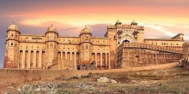
The ticket for the historical fort of Nahargarh costs ₹50 for Indian nationals. For foreign
tourists, the cost goes up to ₹200 (US$2.60). Students enjoy discounted prices. For foreign students, the
ticket costs ₹50 (66¢ US), and ₹25 for Indian students.
Nahargarh fort is open from 10 a.m. and the gates of the fort closes in the evening at 05.30 p.m. The
visitors are not advised to stay any later than that because the fort is surrounded by dense deciduous
forest. The forest is part of Nahargarh Biological Park and home to many wild animals.
#5:-JAISALMER FORT:-
Jaisalmer Fort is situated in the city of Jaisalmer, in the Indian state of Rajasthan. It is believed to be
one of the very few "living forts" in the world (such as Carcassonne, France), as nearly one fourth of the
old city's population still resides within the fort. For the better part of its 800-year history, the fort
was the city of Jaisalmer. The first settlements outside the fort walls, to accommodate the growing
population of Jaisalmer, are said to have come up in the 17th century.
Jaisalmer Fort is the second oldest fort in Rajasthan, built in 1156 AD by the Rajput[2] Rawal (ruler)
Jaisal from whom it derives its name, and stood at the crossroads of important trade routes (including the
ancient Silk road).
The fort's massive yellow sandstone walls are a tawny lion colour during the day, fading to honey-gold as
the sun sets, thereby camouflaging the fort in the yellow desert. For this reason it is also known as the
Sonar Quila or Golden Fort. The fort stands amidst the sandy expanse of the great Thar Desert on Trikuta
Hill. It is today located along the southern edge of the city that bears its name; its dominant hilltop
location making the sprawling towers of its fortifications visible for many miles around.
In 2013, at the 37th session of the World Heritage Committee held in Phnom Penh, Cambodia, Jaisalmer Fort,
along with 5 other forts of Rajasthan, was declared a UNESCO World Heritage Site under the group Hill Forts
of Rajasthan.
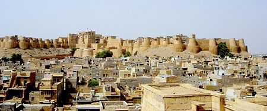
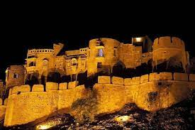
#6:-KUMBHALGARH FORT:-
Kumbhalgarh (literally "Kumbhal fort") also known as the Great Wall of India is a Mewar fortress on the
westerly range of Aravalli Hills, in the Rajsamand district near Udaipur of Rajasthan state in western
India. It is the second-longest wall of the world after the Great Wall of China. It is a World Heritage
Site included in Hill Forts of Rajasthan. It was built during the 15th century by Rana Kumbha.
In 2013, at the 37th session of the World Heritage Committee held in Phnom Penh, Cambodia, Kumbhalgarh Fort,
along with five other forts of Rajasthan, was declared a UNESCO World Heritage Site under the group Hill
Forts of Rajasthan.
The chief architect who built this fort was Mandan, who documented his style of work in his text,
Rajvallabh. At the end, he dedicates the book to King Rana Kumbha.[citation needed]Kumbhalgarh also
separated Mewar and Marwar from each other and was used as a place of refuge for the rulers of Mewar at
times of danger. A notable instance was in the case of Prince Udai, the infant king of Mewar who was
smuggled here in 1535, when Chittor was under siege. Prince Udai later succeeded to the throne. The fort
remained impregnable to direct assault.
Ahmed Shah I of Gujarat attacked the fort in 1457, but found the effort futile. There was a local belief
then that the Banmata deity in the fort protected it and hence he destroyed the temple. There were further
attempts in 1458–59 and 1467 by Mahmud Khalji, but it also proved futile. Akbar's general, Shahbaz Khan,
attacked this fort in October 1577 and after the siege of 6 months, he was able to capture the fort in April
1577. But it was recaptured by Pratap in 1578. In 1818, an armed band of sanyasis formed a garrison to
protect the fort, but was convinced[clarification needed] by James Tod and the fort was taken over by the
British and later returned to Udaipur State. There were additions made by Maharanas of Mewar, but the
original structure built by Maharana Kumbha remains. The residential buildings and temples are
well-preserved. The fort is also known to be the birthplace of Maharana Pratap.
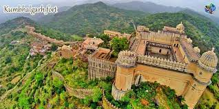
#FAMOUS WILDLIFE SANCTURIES.........
1:-RANTHAMBORE NATIONAL PARK:-The Ranthambore National Park is one of the
largest and most important national parks in the country. It is one of the most popular wildlife
sanctuaries in Rajasthan. It is situated in the Sawai Madhopur district in Rajasthan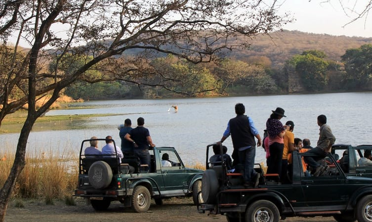
2:-SARISKA NATIONAL PARK,ALWAR:-The Sariska Tiger Reserve is situated in
the Alwar district in the state of Rajasthan and is one of the important national parks in Rajasthan. It
was the hunting grounds of the State of Alwar.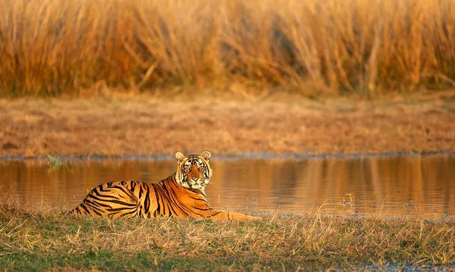
3:-Kumbhalgarh Wildlife Sanctuary, Kumbhalgarh:- The Kumbhalgarh Wildlife
Sanctuary is situated in the Rajsamand district of Rajasthan. The sanctuary is one of the most famous
wildlife sanctuaries in Rajasthan.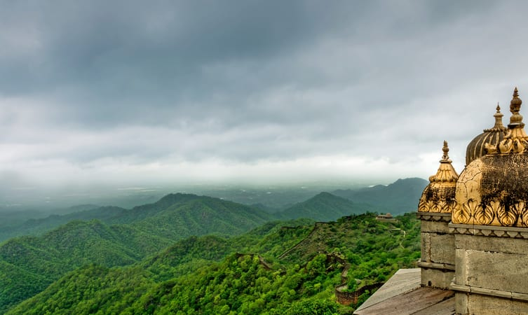
4:-Mount Abu Wildlife Sanctuary, Mount Abu:-Situated in the oldest
mountain ranges of the country – the Aravalli Hills, the Mount Abu Wildlife Sanctuary is one of the most
visited wildlife sanctuaries in Rajasthan. It was declared as a wildlife sanctuary in 1980 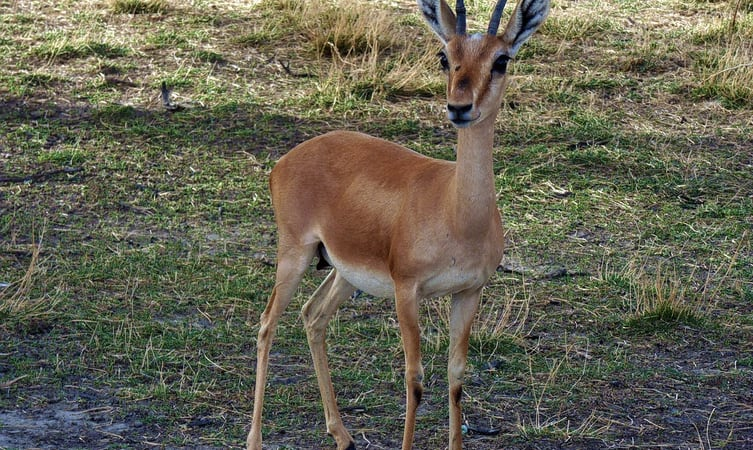
#MOST ADVENTURE ACTIVITIES IN RAJASTHAN.........
1:-HOT AIR BALLOONING RIDE..........
Hot Air Balloon Ride in Pushkar
Witness the masses, camels, and panorama of Pushkar fair from a height of 1,200 feet above ground level.
Fly over the dunes, holy lakes, temples, and architectural wonders.
Duration: Whole experience – 3 hours, air time – 1 hour
Capacity: 4-8 persons
Balloon flight timings:
Sep – Nov: 6.15 am- 4.30 pm
Dec-March: 6.45 am – 3.30 pm
April – June: 5.45 am only
Hot Air Balloon Ride in Jaipur
Ride this hot air balloon in Jaipur and see the majestic palaces, pink walls, and waterside hotels. Shiv
Vilas, Delhi-Jaipur Road, Amer Fort are some other places you will see in this ride.
Duration: Approx. 60 minutes
Capacity: 4-8 persons
Balloon flight timings: 2 hours before sunrise and 2 hours before sunset.
Hot Air Balloon Safari In Ranthambore
Go beyond jeep safaris and explore the blue skies of Ranthambore from a height of 2000-4000 feet above
the ground level. The national parks, colorful villages, golden sands, and beautiful hills are some of
the places to witness during a hot air balloon ride in Ranthambore.
Duration: Approx. 45-60 minutes in the air. The entire activity takes around 4-5 hours.
Capacity: 20 seats
Balloon flight timings:
Sep – Nov: 6.15 am- 4 pm
Dec – March: 6.45 am – 3.30 pm
April – June: 5.45 am
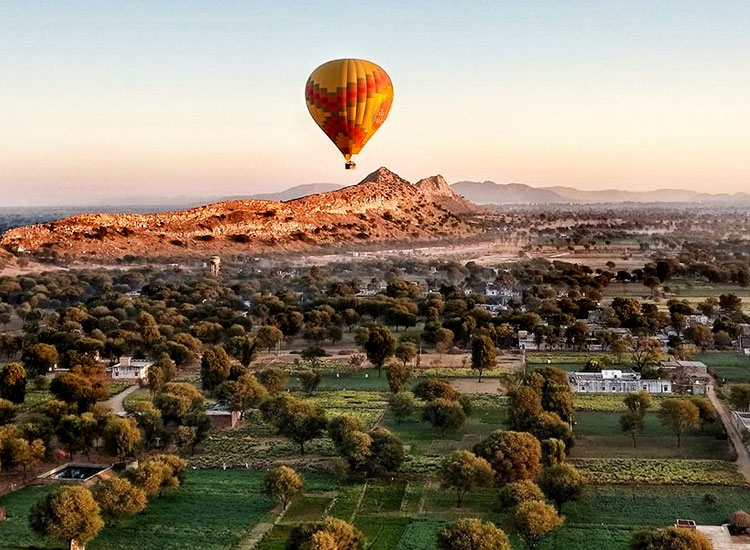
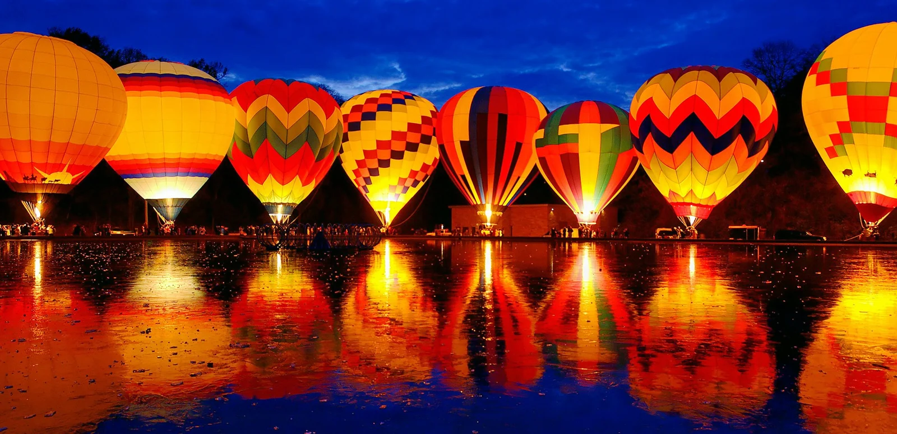
2:-CAMPING:-
If you are in Rajasthan, you should have a camping experience. There are various categories of tents
available and you can choose the same as per your requirement and budget. It will be an unforgettable
experience for you to carry on camping in the deserts of Rajasthan. As the sun will set there are a
series of the itinerary that is followed in the camp. You can enjoy Rajasthan folk songs and dances that
are performed by the local people. Even the foods that are served on the camp are delicious and carry
the raw taste which you will get nowhere, making the whole experience thrilling and camping one of the
exciting adventure sports in Rajasthan. Most of the camps are well maintained and they have a washroom
inside the camp along with the modern amenities. Camping will always make the list of adventure sports
in Rajasthan. Most of the adventure sports, especially camping is quite thrilling.
Location: Jaisalmer, Pushkar, and Jhalawar.
Timings: There is no specific time for camping
Price: Starts from INR 4,500 per person.
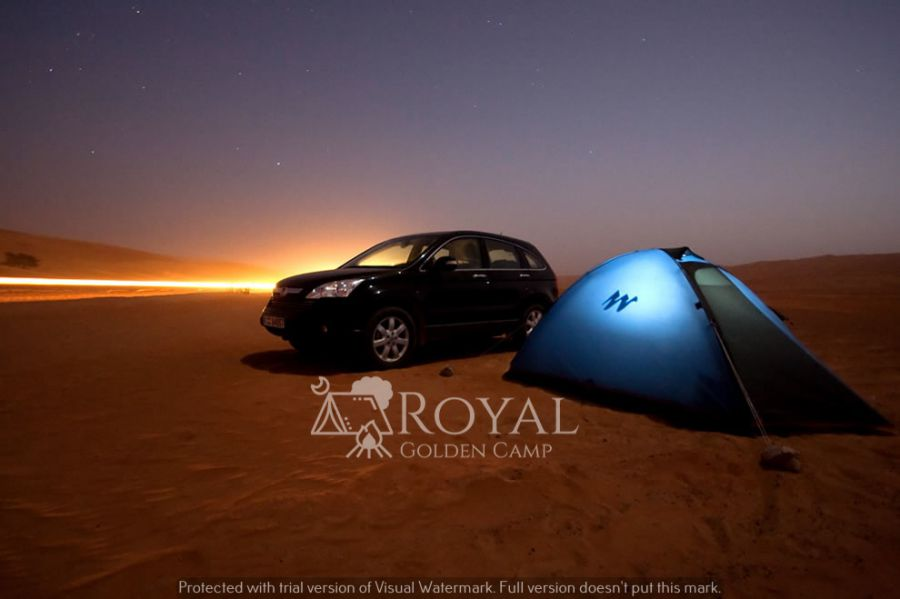
3:-WILDLIFE SAFARI:-
We all know that Rajasthan is the home to many wild animals. You should always try to discover those
animals through the Wildlife safari that are organized by various tour operators. It will be very
interesting to come close those wild animals. Out of these, the camel and desert safari is the most
exciting one and one of the best adventure sports in Rajasthan. Initially, it may appear to be a scary
one, but ultimately, it will be a great experience to view such wild animals. On the other side, the
camel safari will provide a glimpse of the rustic lifestyle of the desert people. You can also taste
Indian food, particularly of Rajasthan during this safari. If you are really lucky then you can come
across various types of wild animals who move around the forest.
Location: Bharatpur, Bikaner, Jodhpur, Bundi
Timings: 7.00AM-4.00PM
Price: Starts from INR 850 per person.
3:-THE OBEROI VANYAVILAS WILDLIFE RESORT,Ranthambore
The Oberoi Vanyavilas Ranthambhore is a jungle resort located at the border of Ranthambhore Tiger Reserve. It
features a spa, outdoor pool and fitness centre. 1 restaurant and 2 bars await guests. Free WiFi is
available in the rooms of the property.
The Oberoi Vanyavilas Ranthambhore is 11 km from Jogi Mahal and 12 km from Ranthambhore Fort. Jaipur and
Sanghaner Airport are 180 km from the resort.
Rooms feature wooden flooring, a four-poster bed and en suite bathroom with a freestanding bathtub. A
flat-screen TV, DVD player and personal safe are provided.
Guests can enjoy yoga sessions or a relaxing massage in the spa. The outdoor pool is heated in winter for
guests’ convenience. A billiards room is available for recreation.
The Dining Room and Inner Courtyard serves a selection of Western, Thai and Indian dishes. Drinks are
featured in Library Bar and Poolbar. Room service is also available.
Show
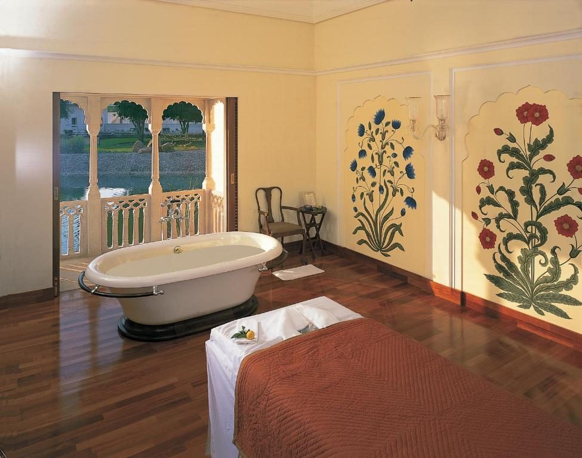
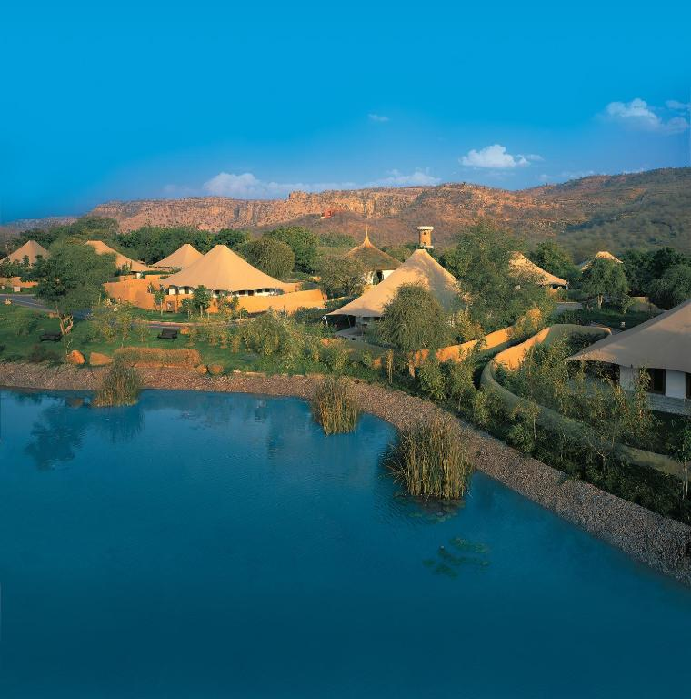
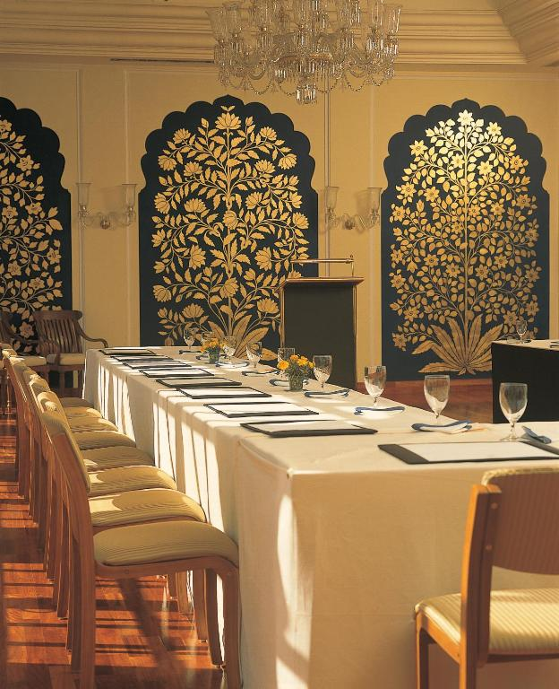
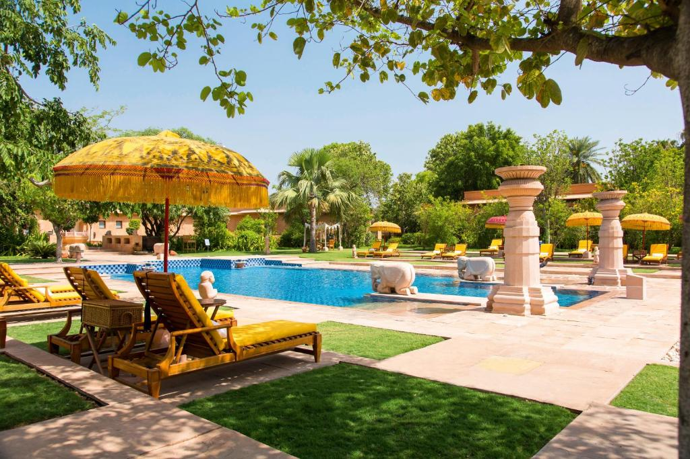
4:-AMANBAGH.......
Amanbagh is a verdant oasis of mature palm, fruit and eucalyptus trees lying within a walled compound,
once the staging area for royal hunts. Evoking the palatial elegance of the Moghul era, Amanbagh's
Haveli suites and pool pavilions provide a tranquil base from which to explore the rich heritage of
Rajasthan, India's dramatic frontier region. Amanbagh's award-winning design features domed cupolas and
private courtyards.
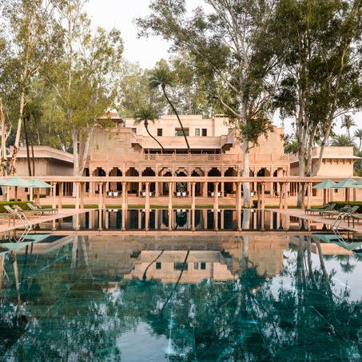
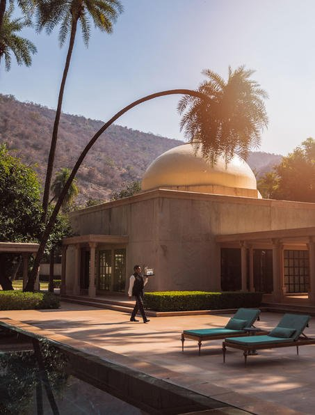
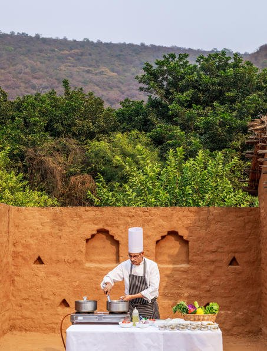
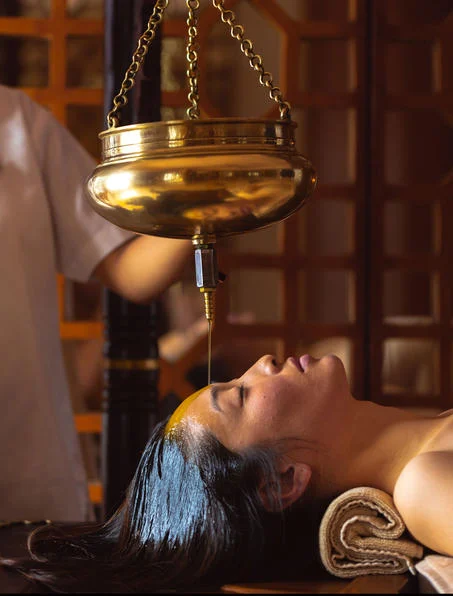
5:-THE WESTIN PUSHKAR(AJMER).....
Surrounded by the picturesque Aravalis, The Westin Pushkar Resort & Spa is a haven of wellness and
renewal. Embrace serenity in five-star villas, featuring luxury hotel amenities, plush furnishings,
Westin White Tea Heavenly™ Bath Amenities and plunge pools in select villas. Explore diverse cultural
and historical attractions, including the Holy Lake, the Sadar Bazaar, the annual Camel Fair, the
world-famous Dargah of Khwaja Moinuddin Chishti and Brahma Temple, created in the 14th century. Turn
your vision into reality in sophisticated spaces for meetings, weddings and social engagements. After an
unforgettable day of business or sightseeing, ignite your senses with flavorful cuisine at our
distinctive restaurants or refresh your body and mind with a full menu of signature therapies at our
Heavenly Spa by Westin™. With beautiful sunsets, serene natural elements and food for the soul, our
Pushkar resort hotel offers perfect staycation experiences in one of the world's most inspiring travel
destinations
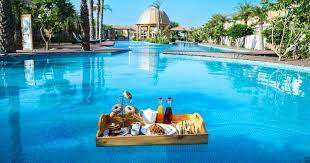
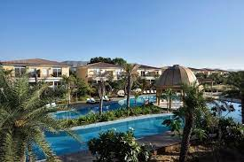
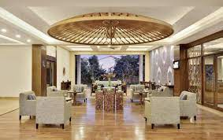